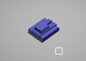
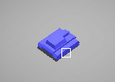

Mouse Input - Unit Selection
From C4 Engine Wiki
Previous Section: Creating a Unit Entity
Contents |
Adding a Material to Indicate Selection
Now to get some Mouse Input going. First thing we’ll do is get unit selection and de-selection working. To start off, we’ll add some color to the tank (We’ll make this tank blue so that later on we can make the enemy tank red). Then, when it gets clicked on, the tank will illuminate to show that it is selected. When the user clicks on anything but the tank, the tank will be de-selected. To get all of this done, we’ll be modifying the TankController, adding a new RTSCommandAction class, and making some minor modifications to the CombatWorld and RTSCamera classes as well as the RTS application class.
So, for the TankController, add these variables and functions:
<Tank.h>
class TankController : public Controller { private: ... DiffuseAttribute *diffuse; EmissionAttribute *emission; MaterialObject *matObject; bool selected; public: ... void SetSelected(bool select); bool IsSelected(); };
<Tank.cpp>
void TankController::SetSelected(bool select) { if(selected != select) { selected = select; if(emission) { if(selected) { emission->SetEmissionColor(ColorRGB(0.1f, 0.1f, 0.5f)); } else { emission->SetEmissionColor(ColorRGB(0.0f, 0.0f, 0.0f)); } } } } bool TankController::IsSelected() { return selected; }
And also add this initialization code to the constructor and Preprocess functions:
<Tank.cpp>
TankController::TankController() : ... selected(false), matObject(nullptr), diffuse(nullptr), emission(nullptr), ... { ... } void TankController::Preprocess(void) { Controller::Preprocess(); Node *node = this->GetTargetNode(); Entity *entity = static_cast<Entity*>(node); if(entity) { matObject = new MaterialObject(); diffuse = new DiffuseAttribute(); emission = new EmissionAttribute(); diffuse->SetAttributeColor(ColorRGB(0.5f, 0.5f, 1.0f)); emission->SetEmissionColor(ColorRGB(0.0f, 0.0f, 0.0f)); matObject->AddAttribute(diffuse); matObject->AddAttribute(emission); Geometry* tankGeo = static_cast<Geometry*>(entity->GetFirstSubnode()); if(tankGeo) { tankGeo->SetMaterialObject(0, matObject); Geometry* turret = static_cast<Geometry*>(tankGeo->GetFirstSubnode()); if(turret) { turret->SetMaterialObject(0, matObject); } } } }
And the cleanup code in the destructor:
<Tank.cpp>
TankController::~TankController() { if(matObject) matObject->Release(); }
Okay, so admittedly, that Preprocess code looks a little unruly, so this is how it’s broken down:
Essentially, we’re creating a new MaterialObject, assigning a new diffuse and emission attribute to the MaterialObject, and then setting this new material object to the tank’s geometry as well as the turret’s geometry. In the TankController’s destructor, the material object is released. Since a MaterialObject can potentially contain numerous references to it, the material object cannot be explicitly deleted. Instead, Release() is called to clean up the material object and its references.
Adding Helper Functions to the Camera Class
All right. Now that that’s out of the way, let’s focus on actually clicking on the tank to select it. Modify the RTSCamera class next by adding a new function. It’s exactly the same function from the Code Snippets section in the wiki, Creating a Ray for a Click Location. The only difference is that this is a member function of the camera instead of the camera being passed in as a parameter.
<RTSCamera.h>
class RTSCamera : public FrustumCamera { public: ... void GetWorldRayFromPoint(const Point& p, Ray *ray); };
<RTSCamera.cpp>
void RTSCamera::GetWorldRayFromPoint(const Point& p, Ray *ray) { const Rect& viewRect = this->GetObject()->GetViewRect(); float x = p.x / (float) viewRect.Width(); float y = p.y / (float) viewRect.Height(); this->CastRay(x, y, ray); const Transform4D& cameraTransform = this->GetNodeTransform(); ray->origin = cameraTransform * ray->origin; ray->direction = (cameraTransform * ray->direction).Normalize(); ray->radius = 0.0f; ray->tmin = 0.0f; ray->tmax = 500.0f; }
Also in RTSCamera.h, add an accessor for the curFocus variable that we added in Creating a Basic Navigation Camera:
<RTSCamera.h>
class RTSCamera : public FrustumCamera { ... public: ... Point3D GetCurrentFocus() { return curFocus; } ... };
Implementing the RTS Command Action
Next, let’s add a new Action to the project. Call the class RTSCommandAction. (We can’t use CommandAction because C4 Engine already uses this internally). For now, this class will handle selection of the tank unit, but will be expanded further to issue commands to the tank for moving and attacking.
<CommandAction.h>
#ifndef COMMAND_ACTION_H #define COMMAND_ACTION_H #include "C4Engine.h" #include "C4Cameras.h" namespace C4 { enum { kActionSelect = 'fire' }; class RTSCommandAction : public Action { private: bool clicked; void EntitySelect(); Entity* IsOverTank(); public: RTSCommandAction(unsigned long type); ~RTSCommandAction(); void Begin(void); void End(void); }; } #endif
Notice that kActionSelect was assigned the constant ‘fire’. This was only because the key bindings config file has the left-click mouse button assigned to ‘fire’. Naturally, you may want to use another constant like ‘slct’ for “select”, but just remember to change your key binding configuration file to reflect that change.
<CommandAction.cpp>
#include "CommandAction.h" #include "C4Engine.h" #include "RTS.h" #include "Tank.h" using namespace C4; RTSCommandAction::RTSCommandAction(unsigned long type) : Action(type), clicked(false) { } RTSCommandAction::~RTSCommandAction() { } void RTSCommandAction::Begin(void) { if(!clicked) { if(this->GetActionType() == kActionSelect) { EntitySelect(); } clicked = true; } } void RTSCommandAction::End(void) { clicked = false; }
The implementations for IsOverTank() and EntitySelect() are longer than usual, so we’ll separate the breakdown here.
The function IsOverTank is the workhorse of the selection process. Its responsibility is to construct a ray that is used to attempt any collision with any nodes in the world. If the ray has collided with an entity node, the code checks to see if it is of type kEntityTank. If the ray has collided with a geometry node, the code then looks up its super node to find the attached Entity node. If it finds one, and the type is of kEntityTank, we return that entity. Otherwise, we return a null pointer.
<CommandAction.cpp>
Entity* RTSCommandAction::IsOverTank() { CombatWorld *world = static_cast<CombatWorld*>(TheWorldMgr->GetWorld()); if(world) { RTSCamera *cam = world->GetNavCamera(); Point3D camPosition = cam->GetNodePosition(); Point3D curFocus = cam->GetCurrentFocus(); CollisionData data; CollisionState state = kCollisionStateNone; Ray ray; Point2D cursorPoint = world->GetCursorPosition(); cam->GetWorldRayFromPoint(Point(cursorPoint.x, cursorPoint.y), &ray); float distance = Magnitude(camPosition - curFocus); Point3D p1 = ray.origin; Point3D p2 = ray.origin + ray.direction * ray.tmax; // Test against all geometry state = world->QueryWorld(p1, p2, 0.0f, 0, &data); if(state != kCollisionStateNone) { Geometry *geo = data.geometry; Node *node = geo->GetSuperNode(); bool overTank = false; while(node) { if(node->GetNodeType() == kNodeEntity) { Entity *entity = static_cast<Entity*>(node); if(entity && entity->GetEntityType() == kEntityTank) return entity; else return nullptr; } // Not an entity, so keep looking to the super node node = node->GetSuperNode(); } } } return nullptr; }
The EntitySelect() function uses the IsOverTank() function to select a tank entity. However, before determining if the mouse is over a tank, the function de-selects all tank entity selections via their respective TankControllers. If the function has found a tank entity, we go ahead and select the tank.
<CommandAction.cpp>
void RTSCommandAction::EntitySelect() { // Reset all tanks CombatWorld *world = static_cast<CombatWorld*>(TheWorldMgr->GetWorld()); C4::Array<Entity*> *tanks = world->GetEntityTanks(); TankController *tankController = nullptr; Entity *tankEntity = nullptr; for(long i = 0; i < tanks->GetElementCount(); i++) { tankEntity = static_cast<Entity*>((*tanks)[i]); if(tankEntity) { tankController = static_cast<TankController*>(tankEntity->GetController()); if(tankController) { tankController->SetSelected(false); } } } // Now see if any of them is clicked on tankEntity = IsOverTank(); if(tankEntity) { tankController = static_cast<TankController*>(tankEntity->GetController()); if(!tankController->IsSelected()) tankController->SetSelected(true); } }
Implementing the Accessor to Get Entity Tanks
Notice the usage of the function GetEntityTanks which is part of the CombatWorld class. Generally, we’ll want a quick way to retrieve all tank entities in the world, so the CombatWorld has this function to do just that. Also remember to include “Tank.h” since the function references kEntityTank. That function implementation is as follows:
<CombatWorld.h>
class CombatWorld : public World { private: ... C4::Array<Entity*> entityTanks; ... public: ... C4::Array<Entity*> *GetEntityTanks(); ... };
<CombatWorld.cpp>
Array<Entity*> *CombatWorld::GetEntityTanks() { entityTanks.Purge(); Node *root = this->GetRootNode(); Node *node = root; unsigned int nodeType = 0; do { nodeType = node->GetNodeType(); if(nodeType == kNodeEntity) { Entity *entity = static_cast<Entity*>(node); if(entity) { if(entity->GetEntityType() == kEntityTank) { entityTanks.AddElement(entity); } } } node = root->GetNextNode(node); } while(node); return &entityTanks; }
NOTE: Please note that this function traverses the entire scene graph, looking for all tank entities. Although this is acceptable for this tutorial, a large-scale project with numerous nodes in the scene graph would make this function impractical. Instead, the step to validate the entityTanks array can be performed during preprocessing of the world, and the array can be modified during run-time as needed.
Registering RTS Commmand Action
As with the NavAction, let’s register the RTSCommandAction with the main application (Remember to include "CommandAction.h" to RTS.h).
<RTS.h>
class RTS : public Singleton <RTS>, public Application { private: ... RTSCommandAction *selectAction; ... };
<RTS.cpp>
RTS::RTS(void) : Singleton<RTS>(TheGame), tankControllerReg(kControllerTank, "Tank"), tankEntityReg(kEntityTank, "tank", kEntityPrecache, kControllerTank) { ... selectAction = new RTSCommandAction(kActionSelect); ... TheInputMgr->AddAction(selectAction); ... }
Don't forget to delete the select action in the destructor!
<RTS.cpp>
RTS::~RTS(void) { ... if(selectAction) delete selectAction; ... }


Now you’re ready to run the app! Just click the mouse cursor on and around the tank, and the tank should light up or turn off. Not much in the way of images for this section, except for an example of what it should look like:
Next Step
Whew! Looks like a lot of work just to get something selected! However, this was put together to make as much possible sense in regards to ownership of member variables and functions to avoid any spaghetti logic and to be easier to expand on later. Also, the principles of how to navigate a C4 scene graph is something that will be done over and over again when implementing more complex Nodes, Actions, Controllers and Properties, so this serves as good practice.
With Unit Selection, we can now start moving the unit tank around with the click of the right-mouse button. This is covered in Mouse Input - Unit Movement.